WELCOME TO
KANGRA VALLEY
DHARAMSHALA CRICKET STADIUM
Dharamshala Cricket Stadium (DCS) is a cricket stadium of international reputation, which serves as the home ground to the Himachal Pradesh state cricket team and also for the IPL team Kings XI Punjab to a limited extent. By virtue of its natural backdrop, it is one of the most attractive cricket stadiums in India. In addition to Ranji matches, some international matches are also held here. The first One day International held at the ground was played between India and England on Sunday, 27th Jan, 2013 which England won by 7 wickets. In May 2011 a match between Kings XI Punjab and Chennai Superkings was held here in which His Holiness the Dalai Lama graced the match of the Indian Premier League (IPL) at the picturesque Himachal Pradesh Cricket Stadium in Dharamshala. The snow capped mountains can be easily viewed throughout the year. An additional feature is the Dharamshala College nearby which is surrounded by pine trees on one side.
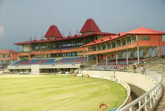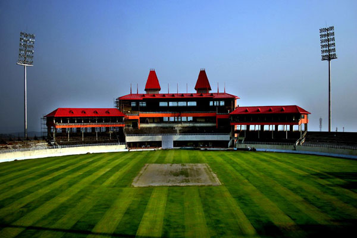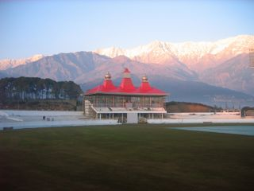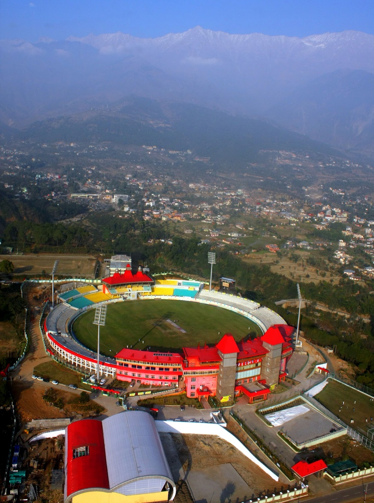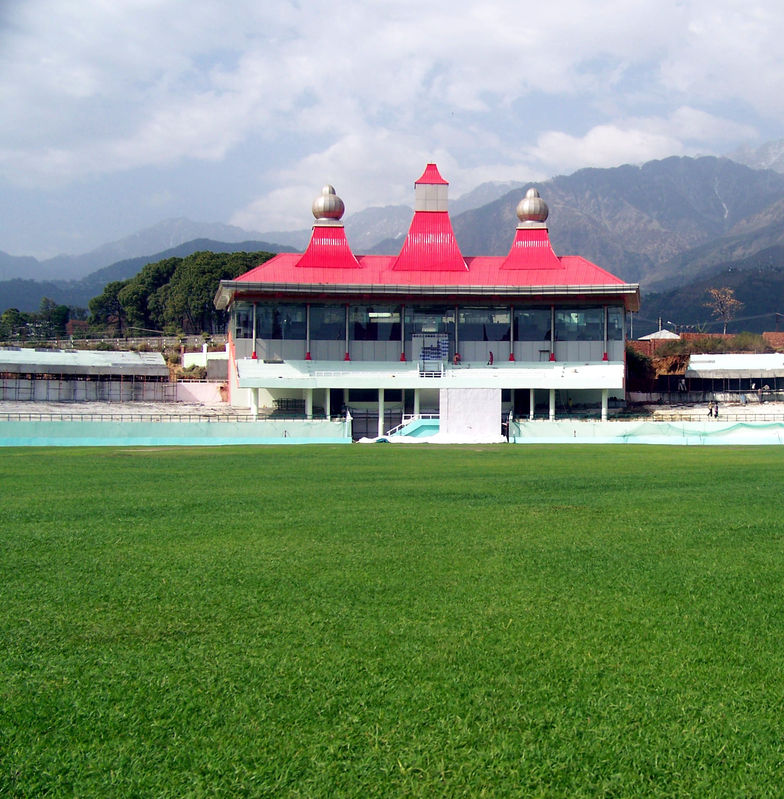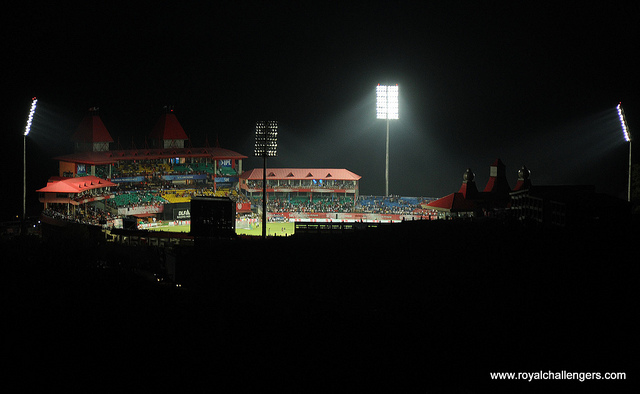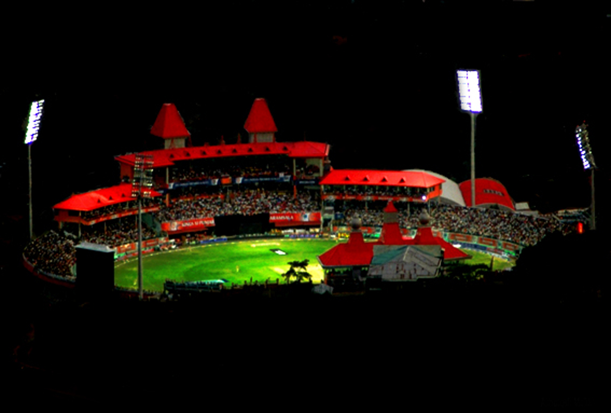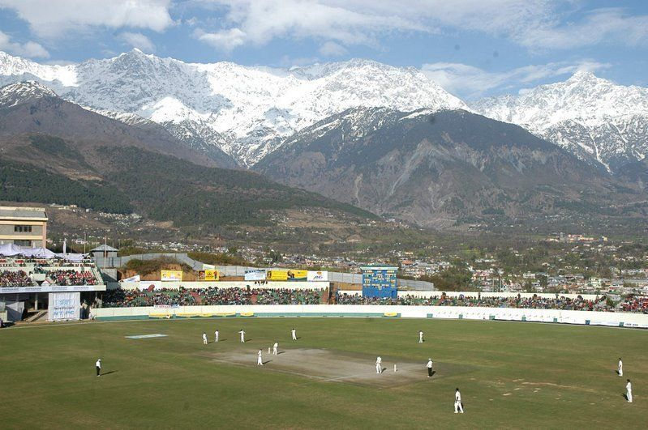
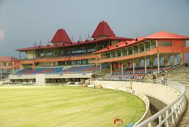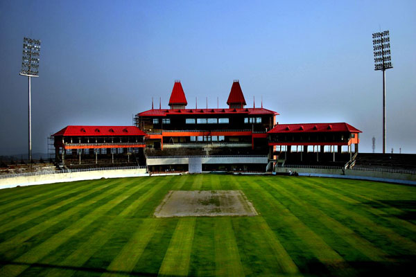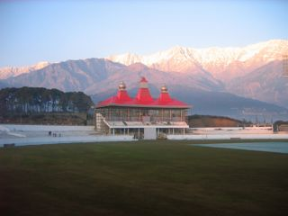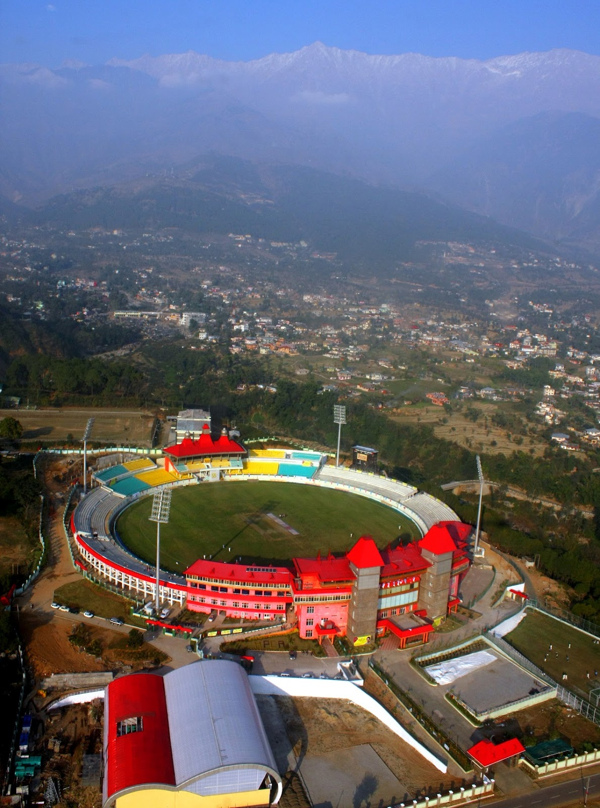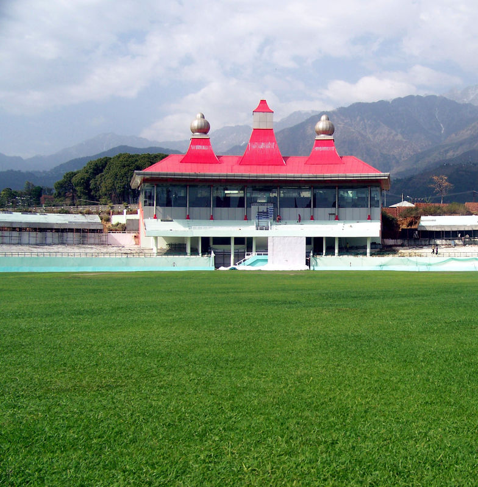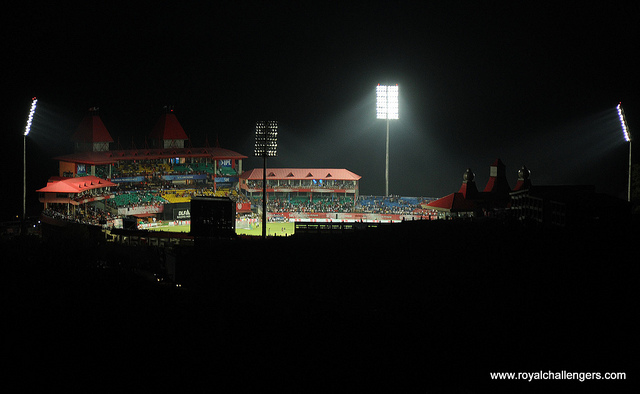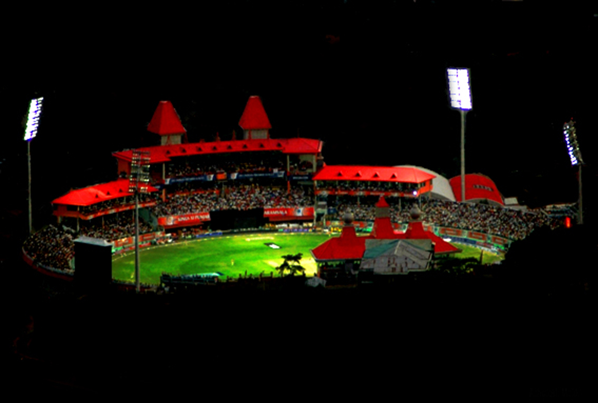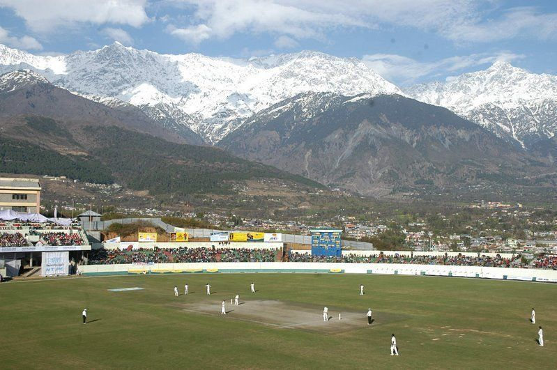